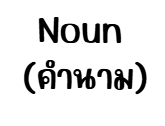
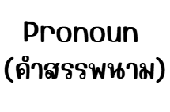
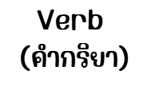
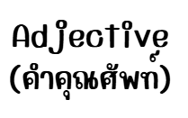
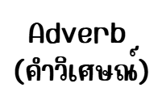
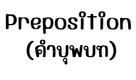
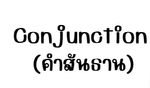
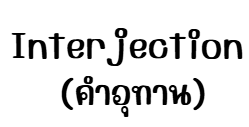
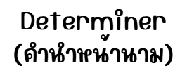

คน สัตว์ สิ่งของ สถานที่
เช่น book, school, happiness.

ใช้แทนคำนาม
เช่น I, you, he, she, it, they.

แสดงการกระทำหรือสภาพ
เช่น run, eat, is, am, are, go

ขยายคำนามหรือสรรพนาม บอกลักษณะ
เช่น tall, beautiful, big

ขยายกริยา คุณศัพท์ หรือวิเศษณ์ด้วยกัน บอกว่าทำอย่างไร ที่ไหน เมื่อไหร่
เช่น quickly, very, well.

แสดงความสัมพันธ์ (ตำแหน่ง, ทิศทาง)
เช่น in, on, at, to, with

คำเชื่อมคำ วลี หรือประโยค
เช่น and, but, or, because

แสดงอารมณ์
เช่น Oh!, Wow!, Ouch!.

เช่น a, an, the, some, many.
Past Continuous Tense
หลักการใช้ : ใช้อธิบายเหตุการณ์ที่เกิดขึ้นก่อนหน้าเหตุการณ์ในอดีตเหตุการณ์หนึ่ง
โครงสร้าง : S + had + V3
ข้อสังเกต : by the time, before, after, when, before last week, by….o’clock yesterday และที่สำคัญ Past Perfect จะใช้คู่กับ Past Simple เสมอ
Past Perfect Continuous Tense
หลักการใช้ : ใช้อธิบายเหตุการณ์ที่เกิดอย่างต่อเนื่องและเกิดขึ้นก่อนอีกเหตุการณ์หนึ่งในอดีต
โครงสร้าง : S + had + been + V.ing
ข้อสังเกต :for, since, how long, before, after
Present Simple Tense
หลักการใช้ : ใช้กับเหตุการณ์ที่เกิดในปัจจุบัน, ทำเป็นประจำ, เป็นจริงทางวิทยาศาสตร์
โครงสร้าง : S + V1 (s, es)
ข้อสังเกต :always, usually, often, never, today, nowadays, every + day/month/year, normally, habitually, naturally
Present Continuous Tense
หลักการใช้ :ใช้กับเหตุการณ์ที่กำลังเกิดขึ้นในปัจจุบัน
โครงสร้าง : S + V. to be + V.ing
ข้อสังเกต : now, right now, at this moment, at the moment, at present
Present Perfect Tense
หลักการใช้ :เล่าเหตุการณ์ที่เกิดในอดีตและดำเนินมาถึงปัจจุบัน หรือส่งผลถึงปัจจุบัน
โครงสร้าง : S + have/has + V3
ข้อสังเกต : since, for, just, yet, already, never, ever
Present Perfect Continuous Tense
หลักการใช้ :ใช้กับเหตุการณ์ที่เกิดขึ้นเรื่อย ๆ ตั้งแต่อดีตจนถึงปัจจุบัน
โครงสร้าง : S + have/has + been + V.ing
ข้อสังเกต : for an hour, for a week, for a long time, for….years, all day, all morning, since
Future Simple Tense
หลักการใช้ :ใช้กับเหตุการณ์ที่เกิดขึ้นทั่วไปในอนาคต
โครงสร้าง : S + will + V1
ข้อสังเกต : tomorrow, next week/month/year, soon
Future Continuous Tense
หลักการใช้ :ใช้กับเหตุการณ์ที่กำลังเกิดขึ้นในอนาคต
โครงสร้าง :S + will + be + V.ing
ข้อสังเกต : at…(time)…tomorrow, at this time tomorrow
Future Perfect Tense
หลักการใช้ :ใช้เล่าถึงเหตุการณ์ที่จะทำเสร็จสมบูรณ์ ณ เวลาหนึ่งในอนาคต
โครงสร้าง : S + will + have + V3
ข้อสังเกต :by the end of this year, by this time tomorrow, in….years time, in…(month)…next year
Future Perfect Continuous Tense
หลักการใช้ :ใช้เล่าถึงเหตุการณ์ในอนาคตที่จะได้ทำไปแล้วเป็นระยะเวลาหนึ่งและกำลังทำอยู่
โครงสร้าง : S + will have + been + V.ing
ข้อสังเกต :for, by, the time